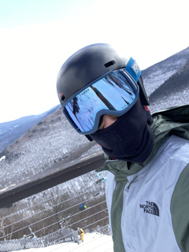
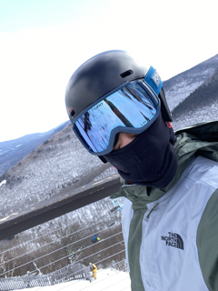
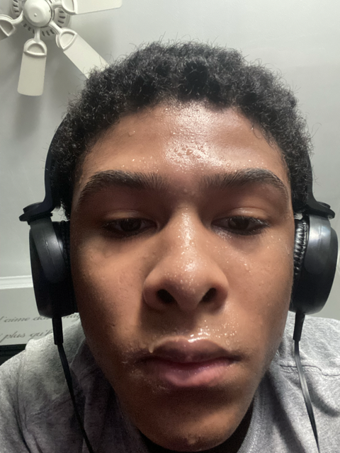
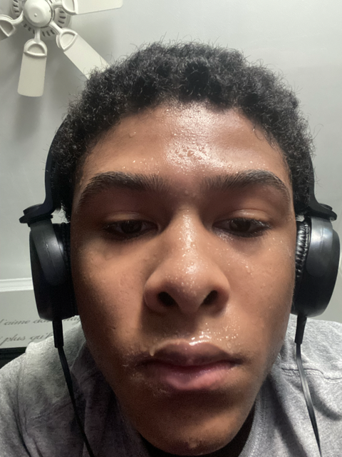

Skiing

 

I'm a bit of a adrenaline junkie and I like to do spontaneous things. I've always wanted to go skiing and this year I had the opportunity to do so. Definitely recommend going to catskills area in upstate New York. Bellearye, Windham, and Hunter Mountain ski resort reside within an approximate 10-20 mile distance of each other. Will be going again next year.

 
